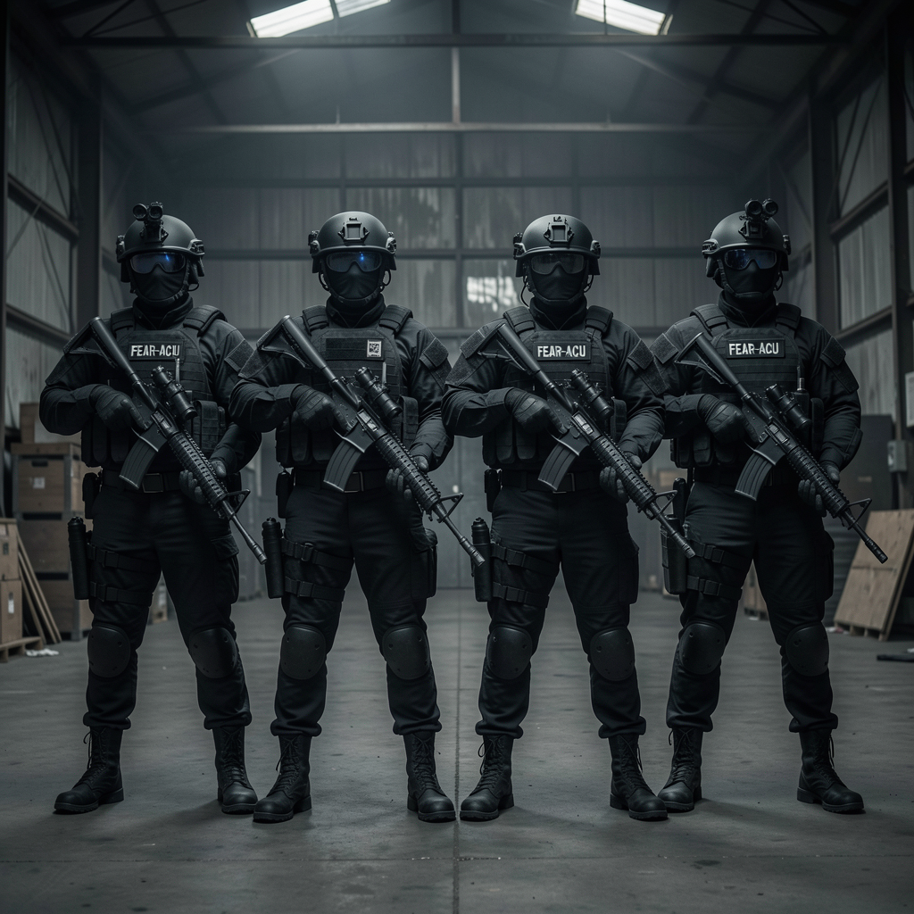
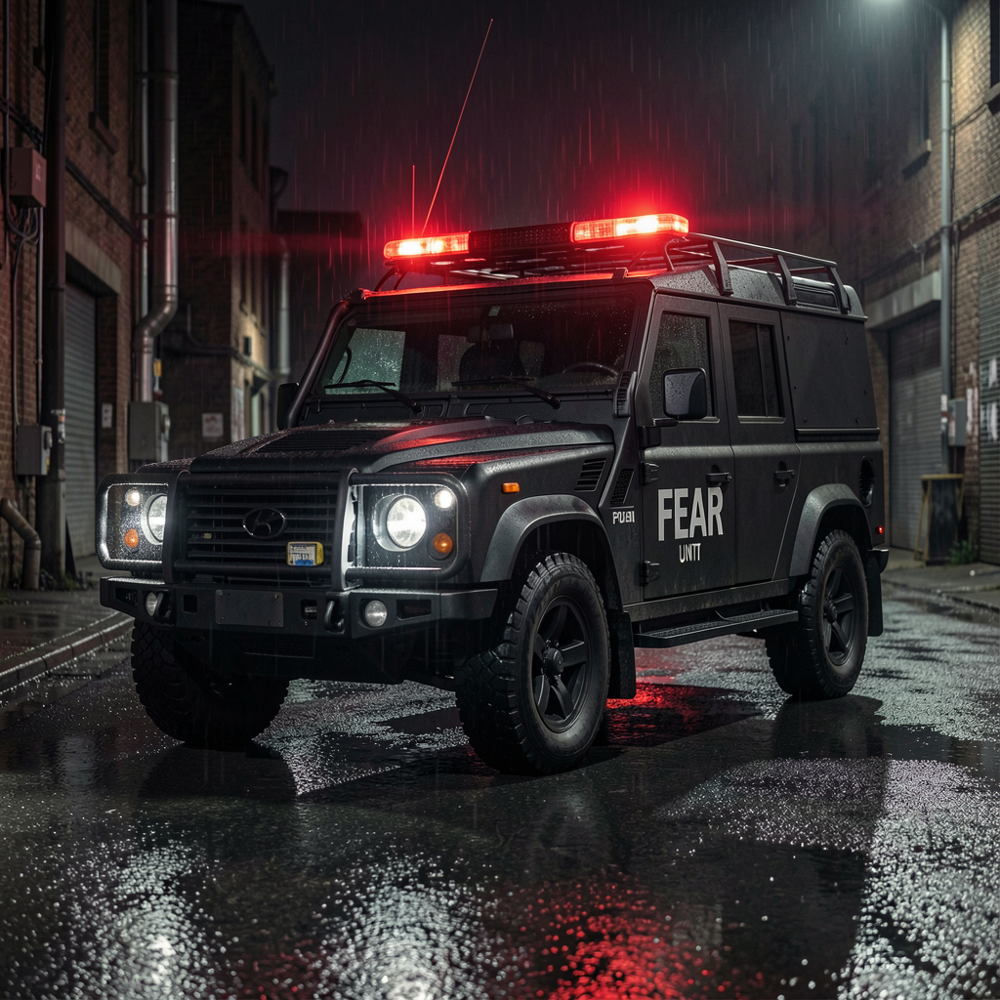
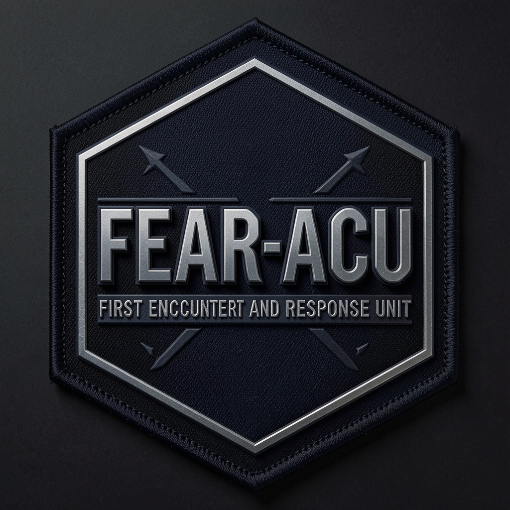

What Is FEAR-ACU?
The First Encounter And Response — Area Containment Unit (FEAR-ACU) exists
in a legal and institutional gap that most citizens never knew existed. Neither conventional military nor local
law enforcement, FEAR-ACU operatives are federally trained and privately funded responders whose mandate covers
any situation that cannot be cleanly handed to an existing agency.
Their operational charter — a heavily redacted document obtained under limited FOIA disclosure — identifies
three core responsibilities: (1) contain, (2) coordinate, (3) suppress knowledge.
The third responsibility is the most controversial and the least publicly acknowledged.
"When the situation exceeds the scope of existing response protocols, FEAR-ACU is activated. We do not investigate. We do not interrogate. We contain."
— FEAR-ACU COMMAND MANUAL, CHAPTER 1
Unit History
[ 2011 — PRE-ORGANIZATION PERIOD ]
Informal multi-agency task force begins operating unofficially across three state lines. Operatives embedded in FEMA, DHS, and USCG without formal chain dissolution.
[ 2015 — FORMALIZATION ]
Executive Order establishes FEAR-ACU as a standing unit. Budget allocation buried in FEMA supplemental appropriations rider.
[ 2019 — FULL ACTIVATION ]
Three-year activation window closes. Unit achieves permanent operational status. Seven regional divisions active.
[ 2024 — CURRENT ERA ]
FEAR-ACU has responded to an estimated 1,247 classified incidents. Approximately 17% of those remain unreported in any public record.
Command Structure
// COMMANDER ARIES WOLF — TEXAS DIVISION, FEAR-ACU // TACTICAL PROFILE [CLASSIFIED]
Commander Aries Thorne
Division Commander — TX
Commander of all FEAR units assigned to the Texas Division corridor. All units under Commander Thorne carry unit designation 77 and are equipped with K9 assets. Former special operations, 12 years field command experience.

FEAR-DELTA-01
Tactical Response Team
Primary field operatives assigned to the Texas Division. Four-person rapid-response unit with full tactical clearance. Active since 2019.

COMMS-MCV
Mobile Command Unit
Armored mobile command and control center. Equipped with IAE-7 encrypted suite and field extraction systems. Stationed at various undisclosed locations.
FEAR Unit Structure — Texas Division
FEAR is organized into three primary unit types, each with distinct roles, vehicle markings, and equipment configurations. All units assigned to Commander Thorne in the Texas Division carry unit number 77.

FEAR-ACU
Area Containment Unit
Primary containment and perimeter security for anomalous incidents. Black tactical vehicles with green lightbars. First on-scene for high-risk situations.
FEAR-RRU
Rapid Response Unit
High-speed intercept and emergency support. Gold/Bronze marked GMC Yukons and Ford Broncos. Deploys for pursuits, fugitive recovery, and emergency mutual aid.
FEAR-AAU
Agency Assistance Unit
Direct law enforcement support at the request of partner agencies. Maroon/Burgundy Suburbans and Jeeps. Handles stolen vehicle recovery, missing persons, traffic stop assistance, and other routine support calls.
Vehicles & Markings
All FEAR vehicles display green or green-and-white lightbars as their sole emergency lighting — no red, no red-and-blue — to clearly distinguish FEAR from law enforcement, fire, and EMS responders. License plates read DEPARTMENT OF PUBLIC SAFETY alongside unit and identifier markings (e.g., ACU 77).
The Name: Is It Justified?
Critics point to the acronym as, at best, tone-deaf and, at worst, deliberate psychological conditioning.
FEAR-ACU's own internal communications have never acknowledged concern about the name's public perception.
Whether that reflects confidence or compartmentalization is the subject of intense speculation online.